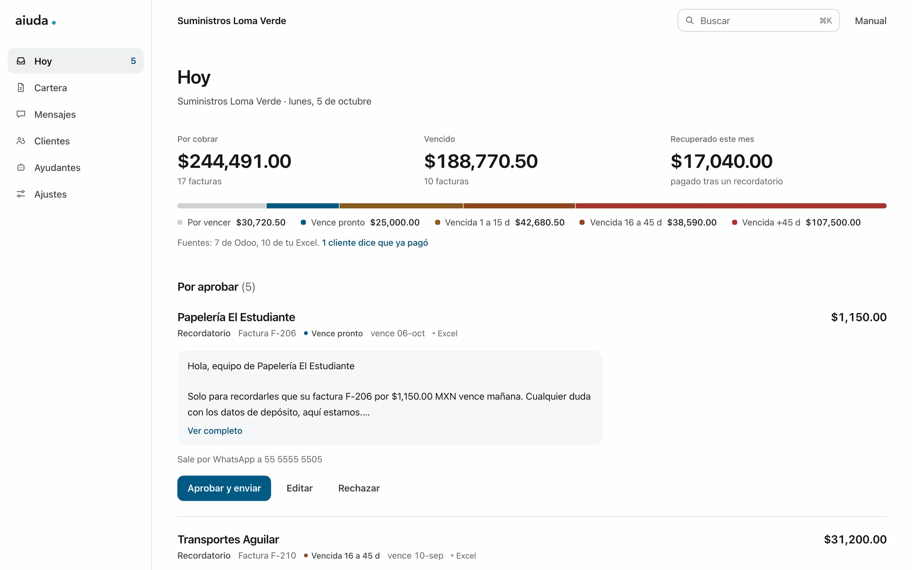
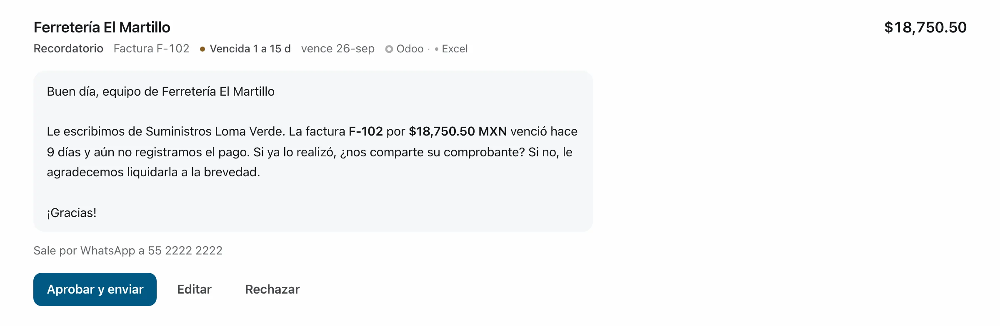
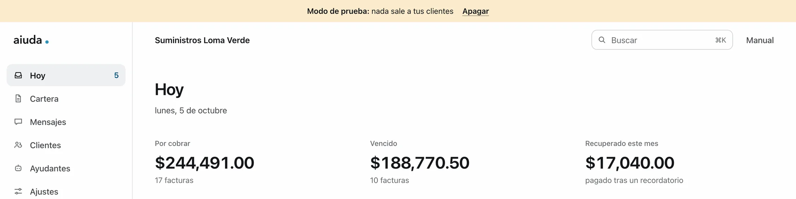
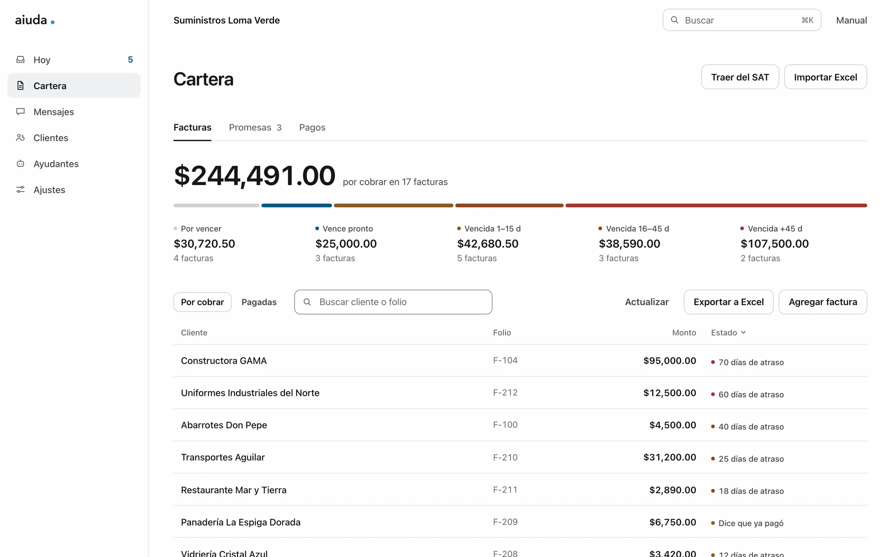
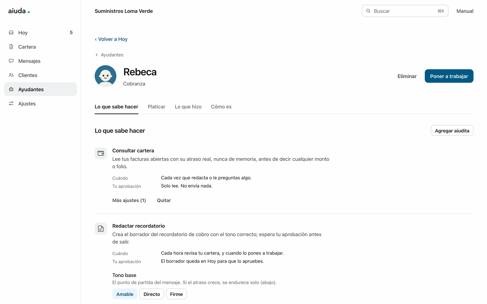
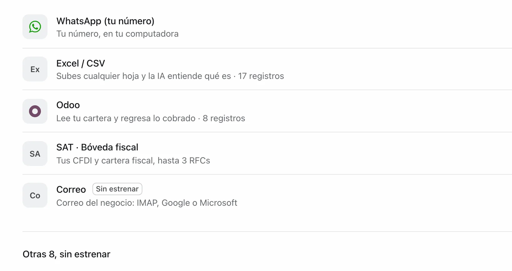

App para Mac, de código abierto
La cobranza del día, lista para que la apruebes.
aiuda lee tu cartera, redacta cada recordatorio y espera. Tú apruebas mensaje por mensaje y sale por tu WhatsApp. Todo vive en tu computadora.
Gratis, con licencia Apache-2.0. Sin cuentas, sin nube y sin telemetría.

Cómo trabaja
Cinco pasos, y el cuarto siempre es tuyo.
Tu sistema sigue mandando. aiuda trabaja encima de lo que ya usas: lee, redacta y te deja la decisión. Hoy lo que está maduro es la cobranza.
-
1Traes tu cartera
De tu Odoo, de tu Excel como lo llevas hoy, de los XML de tus facturas o directo del SAT con tu e.firma. Cada factura guarda de dónde vino.
-
2Conectas tu IA
La que tú elijas y tú pagues: el Claude Code o el Codex que ya tienes en esa Mac, tu propia llave, o un modelo que corre en tu computadora.
-
3Creas tu ayudante
Le pones el nombre que quieras y le dices con qué tono cobrar. Cada hora revisa tu cartera y redacta lo que toca; si el atraso crece, el tono sube solo.
-
4Apruebas
En Hoy te espera cada mensaje con su cliente, su factura y su monto. Lo apruebas, lo editas o lo rechazas. Nada sale sin ese clic.
-
5Sale por tu WhatsApp
Desde tu propio número, uno por uno. Lo que el cliente contesta llega a Mensajes y las promesas de pago quedan anotadas en tu cartera.
Tú apruebas
Cada mensaje pasa por ti antes de salir.
No hay envíos automáticos ni mensajes en bola. Ves el texto completo, a qué número va y de qué factura habla. Si algo no te gusta lo corriges ahí mismo, y tu ayudante toma nota para la siguiente.

Modo de prueba
Empieza sin mandarle nada a nadie.
Una instalación nueva arranca en modo de prueba: tu ayudante redacta, tú apruebas, y nada le llega a tus clientes. Una franja arriba de la pantalla te lo recuerda todo el tiempo. Lo apagas tú cuando ya confías en lo que escribe, y en ese momento decides qué hacer con lo que aprobaste mientras tanto.

Cartera
Quién te debe, cuánto y desde cuándo.
Tus facturas por cobrar en una sola lista, ordenadas por atraso, junto con las promesas de pago y los pagos por confirmar. Si un cliente dice que ya pagó, queda marcado para que lo revises, no se da por bueno solo.

Ayudantes
Tu ayudante, con el nombre que tú le pongas.
En su ficha está a la vista qué sabe hacer, cuándo lo hace y si necesita tu aprobación. Ahí mismo le ajustas el tono, le escribes tus reglas y revisas lo que ha hecho.

Conexiones
De dónde lee y por dónde escribe.
Son 13 en el catálogo. La consola le pone el sello Sin estrenar a cada una que todavía no se ha probado con una cuenta de verdad, para que sepas cuáles funcionan y con cuáles serías el primero.
Estrenadas
- Odoo. Lee tu cartera: facturas y clientes. La cobranza completa está verificada contra un Odoo 19.
- Excel o CSV. Subes tu hoja como la llevas y aiuda entiende qué trae. Volver a subirla no duplica.
- WhatsApp con tu número. Lo vinculas con un código QR, como WhatsApp Web. Solo se leen y se contestan los chats de tus clientes; el resto de tu WhatsApp no entra.
- SAT con tu e.firma. Importa XML o ZIP y baja tus facturas por Descarga Masiva, hasta para tres RFC. La e.firma queda cifrada en tu Mac.
El WhatsApp sale por una vía no oficial: queda fuera de las condiciones de uso de Meta, y Meta puede restringir o suspender el número. La app te lo dice antes de vincularlo.
Del SAT también se bajan la opinión de cumplimiento y la constancia de situación fiscal; las dos se probaron contra el portal real. Por ahora eso solo corre instalando aiuda desde el código, la app todavía no lo trae. Qué se probó del SAT y qué falta

Sin estrenar escritas, sin probar con una cuenta real
- Correo, Shopify, WooCommerce, Google Sheets, Mercado Libre, Facturama, Facturapi, Google Calendar y HubSpot.
Si tu sistema no está y tiene una API, quien te ayuda con la computadora puede conectarlo desde la misma pantalla.
Tu IA
La IA la pones tú.
aiuda no cobra por el uso de la IA ni la revende. Le pagas directo a quien la hace, o no le pagas a nadie si corres un modelo en tu computadora. Tu llave queda cifrada en tu Mac.
-
Claude Code o Codex
Si ya tienes uno instalado en esa Mac y con tu sesión abierta, es un clic. aiuda lo lanza y lee lo que responde; no ve ni guarda tu contraseña. No es una vía oficial según los términos de Anthropic ni de OpenAI, y la app te lo dice antes de conectar.
-
Tu propia llave
De Anthropic o de OpenAI. La pegas una vez y el proveedor te cobra a ti por lo que uses. Es la vía que ellos contemplan para programas como este.
-
En tu computadora
Un modelo local con Ollama, gratis: ningún dato de tus clientes sale de tu Mac. También sirve el de otra computadora de tu oficina, si ya tiene uno.
-
Entrar con ChatGPT Sin estrenar
Para usar el plan de ChatGPT que ya pagas. Está construida y probada contra un servidor de pruebas, pero todavía nadie ha entrado con una cuenta real.
Las cuatro vías, con qué cuesta cada una y a dónde salen tus datos
Tu teléfono
En el celular, todavía no.
Existe una app de iPhone para ver el negocio y aprobar desde el teléfono, emparejada con tu Mac por un código QR. No está en la App Store: hoy solo se instala desde su código, que es cosa de quien programa.
Cuando la tengas, funciona dentro del WiFi de tu negocio y con la Mac prendida. No hay app para Android. Cómo funciona el teléfono
Sin adornos
Qué no es, y en qué va.
aiuda todavía no tiene una versión publicada. Esto es lo que hay hoy.
Qué no es
- No es una nube. Corre en tu Mac, sin cuentas ni servidores nuestros.
- No es tu sistema. Lo que ya usas sigue mandando; aiuda trabaja encima.
- No es una IA que actúa sola. Redacta y espera. Tú apruebas.
- No vende IA. Traes la tuya.
- No manda mensajes masivos. Es uno a uno, con el texto que aprobaste.
En qué va
- Cobranza es lo maduro. Conectar Odoo, traer la cartera real, redactar y aprobar está verificado de principio a fin.
- Solo para Mac, con chip Apple. No hay versión para Windows ni para Linux.
- Sin la firma de Apple todavía. Por eso no hay descarga pública: la app se pide por correo.
- Un negocio por instalación. No hay usuarios ni cuentas dentro de la app.
- Cuatro de trece conexiones estrenadas. Las demás llevan su sello.
Pedir la app
Pídela y te la mandamos.
Todavía no la colgamos de un enlace público porque le falta la firma de Apple. Mientras tanto, nos escribes y te mandamos el instalador.
La app para Mac
Es una app normal: la abres y ella arranca todo, sin terminal. La primera vez te pregunta el nombre de tu negocio, revisa si ya tienes una IA en la computadora y te ayuda a traer tus datos.
Como no lleva la firma de Apple, la primera vez tu Mac avisa que no conoce al desarrollador: se abre con clic derecho y Abrir, esa vez nada más. Necesita una Mac con chip Apple, y macOS 15 o más nuevo para vincular WhatsApp.
Tus datos y tu llave de cifrado viven en una carpeta de tu Mac. La borras y no queda nada en ningún otro lado.
Pídenos la app para MacO desde el código
Para quien programa. Todo está en GitHub con licencia Apache-2.0 y es el mismo programa que va dentro de la app, sin edición de pago. Necesitas Python 3.11 o más nuevo, uv y node.
$ git clone https://github.com/aiuda-io/aiuda $ cd aiuda && uv sync $ cd web && npm ci && npm run export && cd .. $ uv run aiuda start # la consola abre en 127.0.0.1:4747
Todavía no está en PyPI ni hay una versión publicada en GitHub. Cómo instalar, paso a paso